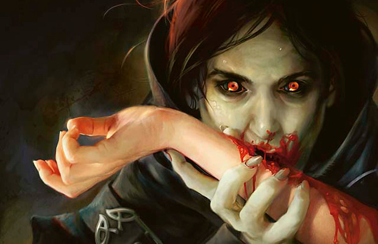

Vampirism

Cynthia Sheppard
What are Kindred?
The Kindred, or vampires as outsiders call them, have certain differences from the vampires you have encountered throughout literature and popular culture. Kindred are numerous and diverse, but have the following common traits:
- Vampirism is a curse of undeath. The vampire is a corpse coursing with arcane blood called vitae. They do not age, breathe, undergo natural healing, or perform human activities such as eating or coitus.
- Vampires must consume blood and only blood. A young vampire can feed on animal blood, but thirst grows with age, and soon only live
humans can satiate. Elders feed only on other vampires. Anything eaten is rejected by the body in a painful and messy manner.
A well fed vampire will live forever in a vacuum. - The curse is transmitted through a willful process called the Embrace. The mortal must be drained of all blood, killing them. The sire then quickly feeds the corpse a few drops of vitae. The mortal will become a kindred and rise in undeath as childe to the sire.
- The sun is extremely dangerous to vampires. During daylight hours, vampires are drained of energy and must enter a death-like slumber called daysleep, or else maintain intense focus to remain awake. Additionally, exposure to direct sunlight for even a short period will cause a vampire to ignite and burn to ash.
- Vampires have a diverse range of abilities fueled by vitae. This includes inhuman strength, toughness, and agility. They can expend vitae to heal,
returning them to the state of their Embrace. They can even imitate the "Blush of Life", allowing them to appear convincingly human and perform activities
such as eating, drinking, and coitus.
Vitae is replenished by mortal blood. - Vampires are compelled to sustain themselves by a psychic force called the Beast. The Beast is the voice of the curse made manifest, ensuring all kindred drink blood, flee the sun, and persist relentlessly. Opposing the Beast means facing a screaming wall of psychic energy and risking the Beast wresting control in a frenzy. The beast makes you a monster.
- To slay a vampire, stake it in the heart, sever the head, and burn the remains.There are many myths about vampires' weaknesses:
garlic, running water, salt, silver. Outside of rare cases, these are merely fiction.
Fire, however, spreads quickly across the kindreds body and the Beast fears it instinctually. A stake through the heart won't kill a vampire, but it will sap the vitae, paralyzing them. Severing the head disconnects the brain from the heart, which is the only certain way of preventing regeneration.